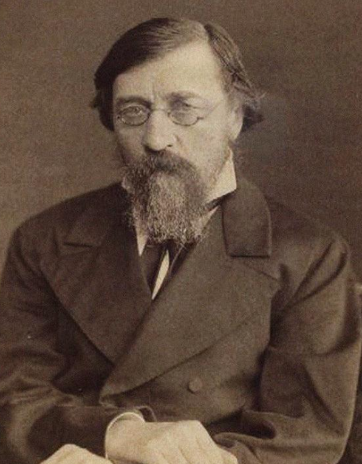

What Is Russian Nihilism?

Russian nihilism is the name given to a current of radical thought and behaviour among the young intelligentsia of Russia in the 1860s. Its adherents attacked autocracy, the authority of the Church, the patriarchal family, and inherited aesthetic standards, and they insisted that beliefs and institutions must be tested against reason, science, and usefulness. The word "nihilist" was first an insult applied to such radicals by their critics, and it was later adopted by some of them as a badge.[1][10]
The movement did not emerge in isolation. Nineteenth-century Russia remained an autocratic society in which the Orthodox Church, aristocratic privilege, and established social customs exercised considerable influence over everyday life. Access to education and intellectual freedom was restricted, while serfdom had shaped the economic and social order for generations. Although the emancipation of the serfs in 1861 brought an important legal change, it did not resolve the inequalities and frustrations that troubled younger intellectuals. Many began questioning whether gradual reform could genuinely transform Russian society or whether its underlying institutions needed more fundamental criticism.
For many of these young radicals, questioning tradition was not simply an intellectual exercise. They wanted to reconsider how people should live, how society should be organised, and why certain authorities were entitled to demand obedience. Religious doctrine, inherited morality, romantic ideals, and social conventions were increasingly treated as claims that required justification rather than truths that deserved automatic acceptance. This outlook was closely connected with the growing influence of materialism, rationalism, and the natural sciences in Russian intellectual life.
An important feature of Russian nihilism was its suspicion of abstract ideals when they appeared disconnected from practical human needs. Its radical thinkers often valued scientific explanation, education, social usefulness, and the possibility of improving material conditions over appeals to sentiment or inherited authority. This did not mean that every nihilist shared an identical programme. Some concentrated on intellectual independence and personal conduct, while others moved towards revolutionary politics and more direct opposition to the existing political order.
The movement is important in the history of nihilism because it is where the word acquired its popular force, even though it differs from the philosophical positions described on the main nihilism page. Its image came largely from literature: Turgenev's novel gave it a face, Dostoevsky's Demons gave it a dark mirror, and Chernyshevsky's What Is to Be Done? gave its supporters a model of life. This page covers the movement's history, its key figures and ideas, and its relationship to philosophical nihilism and revolutionary politics.[2]
It is therefore important not to confuse Russian nihilism with the broader philosophical claim that life has no inherent meaning or that moral values lack an objective foundation. The Russian movement was historically situated and primarily concerned with challenging established authority, inherited beliefs, and the social arrangements of its time. Its participants did not necessarily reject every form of morality, purpose, or human commitment. Many believed that a more rational and equitable society could be built once unjustified traditions and institutions were subjected to criticism.
History of Russian Nihilism
Also read: Explore more history History of philosophy traces how thinkers and philosophical traditions have explored questions about reality, knowledge, morality, and human existence across different periods and cultures. Read article →
Russian nihilism emerged during a period of considerable political and intellectual change in nineteenth-century Russia. The country's defeat in the Crimean War (1853–1856), the death of Tsar Nicholas I in 1855, and the accession of Alexander II exposed the weaknesses of an imperial system that had long depended on autocratic authority, aristocratic privilege, and serfdom. The new reign initially raised expectations of reform, particularly among educated Russians who believed that the country could no longer remain governed by institutions inherited from an earlier age. Intellectual criticism also developed beyond Russia's borders. Alexander Herzen, writing from exile in London, used his newspaper Kolokol (The Bell), first published in 1857, to criticize autocracy and serfdom and encourage political reform. At the same time, European intellectual currents were reaching Russian students and writers. German materialism, particularly the popular scientific writings of Ludwig Büchner, challenged religious and metaphysical explanations of nature, while French socialist thought and British utilitarianism encouraged discussions about social organisation, human welfare, and practical reform. These influences did not produce a single unified philosophy, but they contributed to an intellectual climate increasingly suspicious of inherited beliefs and traditional authority. For the younger generation, reason, scientific inquiry, and social usefulness offered alternative ways of understanding both the individual and society.[1][8][14]
Intellectual Background
The emancipation of the serfs in 1861, one of Alexander II's most significant reforms, became a turning point in this developing intellectual climate. Although it formally ended serfdom, the arrangements surrounding emancipation left many peasants burdened by redemption payments and limited access to land. For radical intellectuals, this exposed the distance between official reform and meaningful social change. Universities, literary journals, and the expanding periodical press became important spaces for debating the future of Russian society. Publications such as Sovremennik (The Contemporary) and Russkoe Slovo (The Russian Word) provided platforms for writers who challenged established literary, religious, and political assumptions. Nikolai Chernyshevsky and Nikolai Dobrolyubov, associated with Sovremennik, attacked social injustice and questioned the idealism of the older generation, while Dmitry Pisarev, writing in Russkoe Slovo, developed a particularly uncompromising criticism of inherited values and conventional ideas about art and culture.[1][4][5]
These debates helped give Russian nihilism much of its distinctive intellectual character. Chernyshevsky's What Is to Be Done? (1863), written during his imprisonment, portrayed a younger generation of rational, independent individuals who sought to organise their personal lives around cooperation, education, and practical improvement. Pisarev, meanwhile, challenged the assumption that traditional cultural achievements deserved respect simply because of their historical prestige. Together, these writers helped popularise the idea that individuals should examine accepted beliefs for themselves rather than submit to authority through habit or convention. Their work also revealed that nihilism was not merely a rejection of old ideas; it was an attempt, in different ways, to imagine how individuals and society might be reorganised without relying on inherited hierarchies.[9]
Decline and Transformation
By the late 1860s, Russian nihilism was facing increasing government repression and growing differences over the methods needed to transform society. Chernyshevsky had been arrested in 1862, imprisoned, and subsequently sent into exile, while Pisarev died in 1868 after years of imprisonment. The attempted assassination of Alexander II by Dmitry Karakozov in 1866 further intensified official suspicion of radical intellectual circles. During the 1870s, parts of the radical movement moved beyond literary and philosophical criticism towards organised revolutionary activity, including attempts to mobilise the peasantry and opposition to the imperial state. This development was not a continuation of one unified nihilist organisation; rather, it reflected the broader transformation of Russian radicalism into different revolutionary movements. Russian nihilism consequently left its mark not only through its criticism of established authority but also through the intellectual and political movements that followed it.
Timeline of Russian Nihilism: Key Dates and Events
Russia's defeat in the Crimean War exposes the weaknesses of the autocratic system and prepares the ground for reform.[8]
Alexander Herzen begins publishing Kolokol in London, an influential voice of Russian radicalism.[14]
Emancipation of the serfs. Radical reaction to its terms helps shape the movement, and the first underground group called Land and Liberty is formed.[1]
Turgenev publishes Fathers and Sons, introducing Bazarov. Dmitry Pisarev defends the type in his essay "Bazarov."[3][6]
Chernyshevsky's What Is to Be Done? appears in Sovremennik and becomes a manual of radical life.[4]
Dmitry Karakozov attempts to assassinate Alexander II, leading to harsher censorship and repression.[9]
Sergei Nechayev publishes the Catechism of a Revolutionary and organizes the murder of a fellow student, an affair that inspires Dostoevsky's Demons.[7]
Dostoevsky serializes Demons, a hostile portrait of revolutionary nihilism.[7]
Thousands of young radicals "go to the people," trying to spread socialist ideas among the peasantry, in what becomes known as the Populist movement.[1]
The revolutionary group Narodnaya Volya adopts terrorism and assassinates Alexander II in March 1881 (the date is given differently under the Russian and Western calendars).[9]B
Lenin publishes the pamphlet What Is to Be Done?, borrowing the title of Chernyshevsky's novel.[13]
Major Figures of Russian Nihilism
Also read: Explore more thinkers Philosophical thinkers are the individuals whose ideas have shaped the study of reality, knowledge, ethics, politics, and human existence across different cultures and periods. Read article →
The movement's figures include critics who developed its ideas, writers who shaped its image, and revolutionaries who later claimed or were attributed its legacy. Not all of them called themselves nihilists, and several were hostile to the label.[1]
| Figure | Period | Role in Russian Nihilism |
|---|---|---|
| Alexander Herzen | 1812–1870 | Émigré writer and publisher of Kolokol; an influential critic of serfdom and autocracy who stood apart from the nihilists' harsher positions.[14] |
| Ivan Turgenev | 1818–1883 | Novelist whose Fathers and Sons popularized the word and created the figure of Bazarov.[3] |
| Nikolai Chernyshevsky | 1828–1889 | Critic and novelist; author of What Is to Be Done?, a defining text for the radical generation.[4] |
| Nikolai Dobrolyubov | 1836–1861 | Critic at Sovremennik who argued that literature should serve social change; died young.[1] |
| Dmitry Pisarev | 1840–1868 | Critic at Russkoe Slovo who gave the sharpest statement of nihilist ideas and defended Bazarov.[5] |
| Mikhail Bakunin | 1814–1876 | Anarchist revolutionary who influenced the wider radical milieu and Turgenev's portrait of Bazarov.[1] |
| Sergei Nechayev | 1847–1882 | Revolutionary conspirator whose Catechism of a Revolutionary and murder of a fellow student inspired Dostoevsky's Demons.[7] |
| Fyodor Dostoevsky | 1821–1881 | Novelist who portrayed radical nihilism critically in Demons and other works.[7] |
Fathers and Sons and the Literary Debate
Fathers and Sons (1862) is the novel most responsible for fixing the image of the nihilist in public imagination. It dramatizes the clash between two generations: the liberal, idealist "fathers" of the 1840s and the scientific, sceptical "sons" of the 1860s. Turgenev did not coin the label out of nothing, since the word had appeared in Russian print before him, usually as an insult, but his novel made it famous across Europe.[3][1]A
The novel appeared at a moment when disagreements between older liberal intellectuals and younger radicals were becoming increasingly visible in Russian society. Rather than presenting this conflict through political arguments alone, Turgenev explored it through family relationships, personal loyalties, education, and competing ideas about how life should be lived. The older generation valued European culture, artistic expression, established manners, and gradual improvement, whereas the younger generation questioned whether such ideals could address the deeper problems of Russian society. Their disagreement was therefore about more than age or temperament; it reflected a wider struggle over authority, intellectual independence, and the direction of social change. Through this generational conflict, Turgenev brought an emerging intellectual movement into mainstream literary discussion.
Bazarov
Yevgeny Bazarov is a young medical student and natural scientist who declares that he is a nihilist: someone who bows to no authority and accepts no principle on faith alone. He dissects frogs, scorns poetry and sentiment, and quarrels with the aristocratic Pavel Kirsanov, who represents the older generation. His preference for scientific observation and practical knowledge reflects the growing influence of materialism and natural science among younger Russian intellectuals. Bazarov regards many inherited ideals as empty conventions and believes that ideas should prove their worth through reason rather than reputation or tradition. Yet the novel also complicates his position. His unexpected love for Anna Odintsova exposes feelings that his rational outlook struggles to accommodate, while his eventual death from an infection contracted during an autopsy reveals the vulnerability behind his confident exterior. Bazarov is consequently more than a straightforward representative of nihilist doctrine: he is a complex character whose convictions, ambitions, pride, and emotional experiences reveal the tensions within the movement itself. Readers have therefore continued to debate whether Turgenev intended him primarily as a criticism of radicalism, a sympathetic portrait of a changing generation, or some combination of both.C[2]
Reception and Controversy
The publication of Fathers and Sons produced a heated response because readers disagreed over what Bazarov represented and how fairly Turgenev had portrayed the younger generation. Critics associated with Sovremennik objected that the character was an inadequate or distorted representation of contemporary radicals, while conservative readers were disturbed by the challenge he posed to established values and social conventions. Dmitry Pisarev, however, defended Bazarov and interpreted him as a convincing representative of a generation unwilling to submit to inherited authority. This disagreement helped turn the novel into an important intellectual debate about the meaning of nihilism rather than simply a work of fiction. The label became increasingly prominent in public discussion, carrying different meanings depending on whether it was used by radicals, their critics, or literary commentators. Turgenev's own position was also more complicated than either complete approval or condemnation of his protagonist. His portrayal captured both the energy of the younger generation and the limitations and contradictions of its outlook. Isaiah Berlin's essay on Turgenev offers a notable later interpretation of the author's liberal position and the conflicts reflected in the novel.[6][3]
Ideas and Beliefs
Russian nihilism was less a unified philosophical doctrine than a collection of related intellectual and social attitudes. Its adherents did not necessarily agree on every question, but many shared a distrust of inherited authority and a belief that ideas should be examined through reason, evidence, and their practical consequences. Rather than accepting religious teachings, moral conventions, or social institutions simply because they had been passed down through generations, they questioned whether these could be rationally justified and whether they genuinely served human welfare. This critical outlook extended beyond politics into science, education, family relationships, literature, and everyday conduct. For many young radicals, rejecting an established belief was not an end in itself; it was part of a broader attempt to replace unquestioned traditions with more rational ways of understanding and organising human life.[1]
Science and Materialism
Natural science occupied an important place in the outlook of Russian nihilists because it offered a method of investigating the world without depending on religious authority or speculative explanations. Influenced by materialist thinkers and developments in biology, chemistry, and physiology, they generally favoured explanations grounded in observable processes over appeals to supernatural forces or abstract metaphysical principles. Human beings, in this view, were part of the natural world and could be studied through the same scientific methods used to investigate other forms of life. This attitude also shaped their understanding of education and intellectual progress. Dmitry Pisarev, in particular, emphasised the importance of scientific knowledge and practical learning, believing that intellectual effort should contribute to society rather than remain confined to abstract discussion or cultural prestige. Their admiration for science therefore represented both a philosophical preference for material explanations and a challenge to institutions that claimed authority through tradition or religious belief.[5][1]
Utility and Rational Egoism
Another important influence on Russian radical thought was the belief that human actions could be understood through reason, self-interest, and the pursuit of well-being. Nikolay Chernyshevsky developed this position through the idea of rational egoism, according to which individuals who understand their genuine interests will recognise that cooperation and concern for others can serve those interests as well. Rather than treating morality as obedience to religious commandments or inherited social expectations, this approach attempted to explain ethical behaviour through human needs and rational calculation. Chernyshevsky explored these ideas in What Is to Be Done? (1863), particularly through the lives of the so-called "new people." His characters establish cooperative workshops, pursue economic independence, and form relationships based on mutual respect rather than traditional dependence. The novel also gives considerable attention to women's education and emancipation, challenging the restricted roles assigned to women in contemporary society. Rational egoism thus offered a way of connecting individual freedom with cooperation and social improvement, rather than treating them as opposing goals.[4]D
Authority, Family, and Aesthetics
The rejection of inherited authority extended into some of the most familiar institutions of Russian life. Nihilist writers questioned the unquestioned power of fathers within the family, the influence of religious dogma over personal judgement, and the legitimacy of an autocratic state that demanded obedience without allowing meaningful political participation. They also challenged conventional expectations surrounding marriage, education, and the position of women, arguing that personal relationships should be based on independence and mutual understanding rather than social obligation alone. Their criticism extended to literature and the arts, where they questioned the assumption that artistic beauty or cultural prestige automatically made a work valuable. Chernyshevsky argued that art should maintain a meaningful relationship with real life, while Pisarev adopted a more uncompromising position, criticising artistic pursuits that appeared detached from practical social needs. His arguments became associated with the controversial rejection of aestheticism, although they should not be taken to mean that every Russian nihilist held an identical view of art. These positions contributed to the movement's reputation for hostility towards established culture, while its supporters regarded such criticism as an effort to place human needs and intellectual honesty above inherited standards of taste and authority.[5][1]
Relationship to Revolutionary Movements
The relationship between nihilism and later revolutionary movements is the most misunderstood part of the story. The nihilists of the 1860s were primarily associated with intellectual criticism, journalism, literature, and challenges to established social authority. Although their rejection of inherited institutions and emphasis on independent thought helped shape the outlook of younger radicals, nihilism itself was not a unified revolutionary organisation or a programme of political violence. During the following decades, Russian radicalism developed in several directions, with some activists pursuing education and social reform, others attempting to organise the peasantry, and a smaller number embracing revolutionary conspiracy.
These developments shared certain intellectual influences but differed considerably in their objectives and methods. The distinction matters because later revolutionary groups are frequently described simply as nihilists, obscuring the political and ideological changes that took place between the 1860s and the revolutionary movements of the late nineteenth century.[9][1]
From Nihilism to Populism
During the 1870s, a significant section of the younger radical generation turned its attention towards the Russian peasantry, which many believed could become the foundation of a more equal society. This outlook developed into Populism, known in Russia as Narodnichestvo, a movement that placed considerable importance on the peasant commune and the possibility of developing a socialist society without necessarily following the same industrial path as Western Europe. In 1874, thousands of young intellectuals and students participated in the movement commonly known as "going to the people." They travelled into rural communities hoping to educate peasants, spread revolutionary ideas, and encourage resistance to existing social arrangements.
However, the campaign achieved little immediate success. Many peasants remained suspicious of the visitors, whose ideas and expectations often differed from rural realities, while the authorities responded with arrests and widespread repression. The failure of this effort exposed the difficulties of translating intellectual radicalism into popular political action. It also encouraged disagreements within the movement, with some activists continuing to favour education and propaganda while others increasingly considered underground organisation and more confrontational methods.[1][9]
Nechayev and the Catechism
Sergei Nechayev became associated with one of the most extreme expressions of revolutionary radicalism in nineteenth-century Russia. His Catechism of a Revolutionary (1869), written in connection with Mikhail Bakunin's revolutionary circles, presented an uncompromising image of the revolutionary activist as someone whose entire existence should be devoted to the destruction of the established political and social order. Personal attachments, private interests, and conventional moral restraints were subordinated to the revolutionary cause. Nechayev's activities went beyond radical writing: in 1869, he became involved in the murder of Ivan Ivanov, a former member of his revolutionary group whom he suspected of disloyalty.
The killing exposed the coercive and manipulative methods used within his organisation and created a major scandal among Russian radicals. His relationship with Bakunin also eventually deteriorated, particularly over Nechayev's methods and willingness to deceive fellow revolutionaries. The episode later provided part of the historical background for Dostoevsky's Demons (1872), which explored the destructive possibilities of ideological fanaticism and revolutionary conspiracy. Nechayev should therefore be understood as an extreme and controversial figure rather than a representative of every nihilist or Russian radical.[7][9]
Narodnaya Volya and 1881
The revolutionary movement became more organised towards the end of the 1870s. In 1879, a section of the populist revolutionary organisation Zemlya i Volya (Land and Liberty) split away and established Narodnaya Volya (People's Will). Unlike the earlier emphasis on spreading ideas among the peasantry, its members increasingly focused on confronting the autocratic state through organised political struggle. They believed that the removal of the tsar could create the conditions for wider political change, and their campaign included a series of assassination attempts against Alexander II.
On 13 March 1881 (1 March according to the Russian calendar then in use), members of Narodnaya Volya successfully assassinated the tsar in St Petersburg. The assassination became one of the most significant events in the history of Russian revolutionary politics, but it did not bring about the democratic transformation its organisers had hoped for. Instead, the government intensified repression and curtailed many of the reformist expectations associated with Alexander II's reign. Although popular accounts often describe the perpetrators as nihilists, Narodnaya Volya was a distinct revolutionary organisation with its own political objectives and methods. Its history demonstrates how some strands of Russian radicalism developed into organised revolutionary action, but it should not be treated as interchangeable with the broader intellectual movement of the 1860s.E[9]
Russian Nihilism vs Philosophical Nihilism: Key Differences
Also read: Explore nihilism Nihilism is a family of philosophical positions that deny or radically question meaning, value, knowledge, or other foundations of human existence. Read article →
Russian nihilism and philosophical nihilism share a name but differ in subject matter. Russian nihilism was a historical movement with positive commitments to science, utility, and reform, whereas philosophical nihilism is a family of positions that deny meaning, value, or knowledge. Confusing them leads to the mistaken view that the Russian radicals believed in nothing.
| Aspect | Russian Nihilism | Philosophical Nihilism |
|---|---|---|
| Nature | A historical movement and cultural attitude of the 1860s.[1] | A family of philosophical positions, not tied to one period.[11] |
| Main target | Autocracy, religious authority, inherited social hierarchy, and traditional aesthetics. | Meaning, moral facts, knowledge, or the existence of certain kinds of things, depending on the form. |
| Attitude to values | Rejects inherited values that cannot justify themselves but affirms science, utility, and reform. | Denies or questions that objective values exist at all. |
| Typical goal | Social progress, education, and emancipation. | Usually theoretical: to describe the status of meaning, value, or knowledge. |
| Key sources | Turgenev, Chernyshevsky, Pisarev, Dostoevsky. | Jacobi, Nietzsche, Mackie, and many others.[12] |
| Link between them | The Russian movement gave the word its popular force. | Philosophers later reinterpreted the term, especially after Nietzsche. |
Criticisms and Responses
Russian nihilism attracted criticism almost from the moment it became a recognisable intellectual movement. Its rejection of religious authority, established morality, traditional culture, and existing social institutions unsettled writers and thinkers from different political and philosophical backgrounds. Some critics considered its materialism too narrow to account for human emotions, spiritual experience, and moral responsibility, while others feared that its rejection of inherited values could weaken the social foundations on which communities depended.
Novelists, conservatives, liberals, and later historians consequently offered very different interpretations of what nihilism represented and what its consequences might be.[1]
Dostoevsky's Critique
Fyodor Dostoevsky became one of the most influential literary critics of revolutionary nihilism. His novel Demons (1872), inspired in part by the Nechayev affair, explores what can happen when revolutionary convictions become detached from moral responsibility and personal conscience. Through its characters and their conspiratorial activities, Dostoevsky portrayed a world in which abstract political ideals could justify manipulation, cruelty, and violence. His criticism extended beyond revolutionary organisation to the underlying assumption that human society could be reconstructed through reason and political calculation alone.
He feared that abandoning spiritual and moral foundations might leave individuals vulnerable to fanaticism and destructive ambition. However, Demons should also be understood as a literary and philosophical response shaped by Dostoevsky's own Orthodox Christian convictions and political concerns. His portrayal captured a particularly extreme form of revolutionary radicalism and should not be treated as an accurate description of every Russian nihilist or young intellectual of the 1860s.[7]
Conservative and Liberal Critics
Conservative and Slavophile thinkers generally regarded Russian nihilism as a threat to the country's religious, cultural, and historical foundations. They feared that the growing influence of Western European materialism and radical social ideas would weaken the Orthodox Church, traditional family relationships, and Russia's distinctive cultural identity. Liberal critics, although often sympathetic to reform and critical of autocracy, were also uneasy about the more uncompromising elements of radical thought.
Ivan Turgenev, for example, recognised the intellectual energy of the younger generation but struggled with its rejection of values and traditions that he considered important. The controversy surrounding Fathers and Sons demonstrated how difficult it was to portray the new generation without provoking objections from both radicals and conservatives. As a result, the word "nihilist" frequently became a polemical label rather than a precise description of someone's beliefs, making it difficult to separate the actual positions of individual radicals from the criticisms directed against them.[3][6]
Historical Reassessment
Later historical scholarship has offered a more balanced understanding of Russian nihilism, moving beyond the image of nihilists as simply destructive opponents of religion, morality, and social order. Historians have drawn attention to the movement's positive commitments, including scientific education, intellectual independence, women's emancipation, and criticism of entrenched social inequality. They have also emphasised that the people associated with nihilism did not constitute a single organisation or share an identical political programme.
The revolutionary violence of the later nineteenth century developed through particular organisations and historical circumstances, including government repression and the frustrations surrounding political reform. Although certain intellectual attitudes carried over into later radical movements, it would be misleading to treat terrorism as the inevitable outcome of the original nihilist outlook. Russian nihilism is therefore better understood as a diverse historical current that challenged established assumptions while also participating in wider debates about education, social change, individual freedom, and the future of Russia.[1][9]
Influence and Legacy
On Literature
Russian nihilism left a lasting mark on nineteenth-century literature, particularly through the way novelists used characters and personal conflicts to explore competing philosophical and political beliefs. Turgenev's Bazarov introduced a memorable literary representation of the sceptical younger generation, while Dostoevsky examined the darker possibilities of revolutionary conviction through the characters and conspiracies of Demons. Chernyshevsky, in contrast, presented a more constructive image of radical thought through the independent and cooperative lives of the "new people" in What Is to Be Done?
These different portrayals ensured that nihilism became more than a political label: it developed into a recurring literary subject through which writers explored generational conflict, individual freedom, moral responsibility, and the consequences of rejecting established values. The questions raised by these works continued to influence Russian literary discussions long after the original movement had lost its prominence.[3][7]
On Revolutionary Politics
The intellectual legacy of Russian nihilism also extended into later revolutionary politics, particularly through the example of Chernyshevsky's What Is to Be Done?. Its portrayal of disciplined, educated individuals committed to changing society became influential among sections of the Russian revolutionary intelligentsia. Vladimir Lenin later acknowledged the novel's profound influence on his intellectual development and deliberately borrowed its title for his own political pamphlet, What Is to Be Done? (1902).
Lenin's work, however, addressed the organisation and direction of the revolutionary movement rather than simply repeating Chernyshevsky's ideas. More broadly, the nineteenth-century tradition of politically committed intellectuals, underground organisation, and personal sacrifice contributed to the environment in which later Russian revolutionary movements developed. Nevertheless, these later movements had their own political theories, organisational structures, and historical circumstances. Their relationship with nihilism is best understood as one of intellectual inheritance and transformation rather than direct ideological continuity.[13][8]
On Later Philosophy
Russian nihilism also contributed to the wider European discussion of nihilism as a philosophical problem, particularly through its literary representations and the debates surrounding the rejection of traditional values. Dostoevsky's exploration of belief, morality, freedom, and the consequences of abandoning established convictions attracted attention beyond Russia. Friedrich Nietzsche later expressed considerable admiration for Dostoevsky, describing him as a psychologist from whom he had something to learn.
Although Nietzsche developed his own philosophical examination of nihilism through different intellectual concerns, the literary treatment of radical doubt and moral disorientation formed part of the broader European conversation in which these questions became increasingly important. Russian nihilism thus occupies a significant place in the nineteenth-century history of the concept, particularly because it brought the conflict between inherited values and modern intellectual criticism into public and literary debate.[12][10]
In Popular Usage
The Russian episode played an important role in shaping the popular meaning of the word "nihilist." Through literature, political commentary, and public debate, the term became associated with people who rejected conventional values, questioned established authority, or opposed traditional institutions. Over time, its meaning expanded further, and it was increasingly used in journalism and political rhetoric to describe revolutionaries, political extremists, and even people regarded as cynical or indifferent to moral principles.
These uses often blurred important distinctions between philosophical scepticism, social radicalism, and revolutionary violence. The historical Russian movement, however, involved more than rejection and destruction: many of its intellectuals were committed to scientific education, individual independence, and social improvement. Remembering these commitments helps distinguish the nineteenth-century movement from the broader and often loosely applied meaning of nihilism in everyday language.[1]
Frequently Asked Questions About Russian Nihilism
What was Russian nihilism?
Russian nihilism was a radical intellectual movement of the 1860s that criticized autocracy, religious authority, inherited social hierarchy, and traditional aesthetic standards in the name of science, utility, and social reform. Its followers did not believe in nothing; they rejected authority that could not justify itself.
Who was Bazarov?
Bazarov is the central character of Ivan Turgenev's 1862 novel Fathers and Sons. A young medical student and natural scientist, he calls himself a nihilist, rejects inherited authority and sentiment, and becomes the literary image of the movement.
Who were the main Russian nihilists?
Key figures associated with the movement include the critics Nikolai Chernyshevsky, Nikolai Dobrolyubov, and Dmitry Pisarev. Alexander Herzen and Mikhail Bakunin influenced the wider radical milieu, and Turgenev and Dostoevsky shaped how the movement was imagined through their novels.
Was Russian nihilism the same as philosophical nihilism?
No. Russian nihilism was a historically specific movement with positive commitments to science, utility, and reform, whereas philosophical nihilism usually denies meaning, value, or knowledge. The two share a name but differ in aims and ideas.
Did Russian nihilists assassinate Tsar Alexander II?
The 1881 assassination was carried out by members of the revolutionary group Narodnaya Volya. Popular accounts often call such radicals nihilists, but historians distinguish them from the 1860s nihilist generation in aims, methods, and ideas.
How did Dostoevsky portray Russian nihilism?
Dostoevsky offered a hostile and influential portrait of radical nihilism in Demons (1871–72), which dramatized the violent potential he saw in revolutionary ideology and was partly inspired by the Nechayev affair.
What is the legacy of Russian nihilism?
Russian nihilism shaped Russian literature, influenced later revolutionary movements, and gave the word nihilism its popular meaning. Chernyshevsky's novel What Is to Be Done? inspired later radicals, including Lenin, who borrowed its title for a 1902 pamphlet.
Notes
-
Dating the first uses of "nihilist" in Russian is difficult, and dictionaries and scholars give different accounts. It is safest to say that Turgenev popularized the word rather than invented it. ↩
-
Russia used the Julian calendar until 1918, which ran twelve days behind the Gregorian calendar in the nineteenth century. The 1881 assassination is dated 1 March in the Julian calendar and 13 March in the Gregorian calendar. ↩
-
Bazarov is a fictional character, not a historical person. His traits were drawn from Turgenev's observation of the younger generation, and Turgenev's own attitude toward him was ambivalent, which is one reason the novel was read so differently by different camps. ↩
-
"Rational egoism" in Chernyshevsky is not a defence of selfishness in the ordinary sense. It is the claim that a clear understanding of one's own interest leads to cooperation and concern for others. Critics, including Dostoevsky, doubted that this was psychologically or morally sufficient. ↩
-
The Russian nihilists of the 1860s should not be confused with the later revolutionary groups of the 1870s and 1880s. Popular usage often calls all of them nihilists, but historians distinguish them in aims, methods, and organization. ↩
Citations
-
Venturi, F. Roots of Revolution: A History of the Populist and Socialist Movements in Nineteenth Century Russia. London: Weidenfeld and Nicolson, 1960. ↩
-
Turgenev, I. Fathers and Sons, trans. M. R. Katz. New York: W. W. Norton, 2009 (Norton Critical Edition). ↩
-
Berlin, I. "Fathers and Children: Turgenev and the Liberal Predicament." In Russian Thinkers. London: Hogarth Press, 1978. ↩
-
Chernyshevsky, N. G. What Is to Be Done?, trans. M. R. Katz. Ithaca: Cornell University Press, 1989. ↩
-
Pisarev, D. I. Selected Philosophical, Social and Political Essays. Moscow: Foreign Languages Publishing House, 1958. ↩
-
Moser, C. A. Antinihilism in the Russian Novel of the 1860's. The Hague: Mouton, 1964. ↩
-
Dostoevsky, F. Demons, trans. R. Pevear and L. Volokhonsky. New York: Vintage, 1995. ↩
-
Billington, J. H. The Icon and the Axe: An Interpretive History of Russian Culture. New York: Knopf, 1966. ↩
-
Ulam, A. B. In the Name of the People: Prophets and Conspirators in Prerevolutionary Russia. New York: Viking, 1977. ↩
-
Stewart, J. A History of Nihilism in the Nineteenth Century: Confrontations with Nothingness. Cambridge: Cambridge University Press, 2023. ↩
-
Crosby, D. A. "Nihilism." Routledge Encyclopedia of Philosophy. London: Routledge, 1998. ↩
-
Gillespie, M. A. Nihilism Before Nietzsche. Chicago: University of Chicago Press, 1995. ↩
-
Lenin, V. I. What Is to Be Done? Burning Questions of Our Movement (1902). ↩
-
Herzen, A. My Past and Thoughts, trans. C. Garnett, rev. D. Macdonald. Berkeley: University of California Press, 1982. ↩
Bibliography
Primary Texts
-
Chernyshevsky, N. G. What Is to Be Done?, trans. M. R. Katz. Ithaca: Cornell University Press, 1989.
-
Dostoevsky, F. Demons, trans. R. Pevear and L. Volokhonsky. New York: Vintage, 1995.
-
Herzen, A. My Past and Thoughts, trans. C. Garnett, rev. D. Macdonald. Berkeley: University of California Press, 1982.
-
Pisarev, D. I. Selected Philosophical, Social and Political Essays. Moscow: Foreign Languages Publishing House, 1958.
-
Turgenev, I. Fathers and Sons, trans. M. R. Katz. New York: W. W. Norton, 2009.
Histories and Surveys
-
Billington, J. H. The Icon and the Axe. New York: Knopf, 1966.
-
Ulam, A. B. In the Name of the People. New York: Viking, 1977.
-
Venturi, F. Roots of Revolution. London: Weidenfeld and Nicolson, 1960.
Nihilism in General
-
Crosby, D. A. "Nihilism." Routledge Encyclopedia of Philosophy. London: Routledge, 1998.
-
Gillespie, M. A. Nihilism Before Nietzsche. Chicago: University of Chicago Press, 1995.
-
Stewart, J. A History of Nihilism in the Nineteenth Century. Cambridge: Cambridge University Press, 2023.
Academic Tools
Other Internet Resources
-
“Russian nihilist movement.” Wikipedia.
-
“Fathers and Sons (novel).” Wikipedia.
-
Pratt, Alan. “Nihilism.” Internet Encyclopedia of Philosophy.
-
“Nihilism.” Online Etymology Dictionary.
Further Reading
-
Berlin, I. "Fathers and Children: Turgenev and the Liberal Predicament." In Russian Thinkers. London: Hogarth Press, 1978.
-
Moser, C. A. Antinihilism in the Russian Novel of the 1860's. The Hague: Mouton, 1964.
-
Ulam, A. B. In the Name of the People. New York: Viking, 1977.
-
Venturi, F. Roots of Revolution. London: Weidenfeld and Nicolson, 1960.